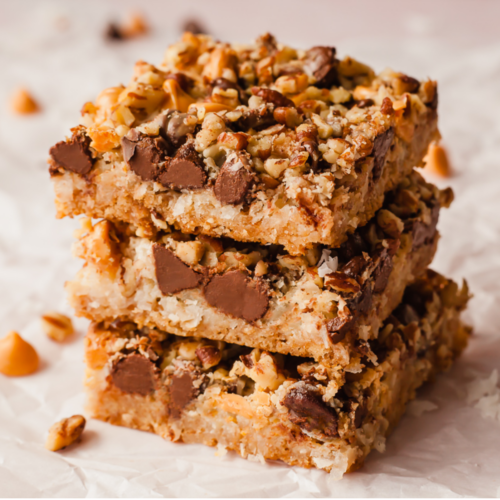

7 Layer Bars

Description
Easy to make, and very rich. Can Use differentr kinds of chips (vanilla or peanut butter) to suit your taste.
Ingredients
- 1/2 cup unsalted butter
- 1 1/2 cups graham cracker crumbs
- 1 cup semisweet chocolate chips
- 1 cup butterscotch chips
- 1 cup chopped walnuts
- 1 (14 ounce) can sweetened condensed milk
- 1 1/3 cups shredded coconut
Steps
- Preheat oven to 350 degrees F (180 degrees C).
- Place butter in 13 x 9 inch pan and melt in oven. Swirl to coat bottom and sides with butter.
- Spread graham cracker crumbs evenly over bottom of pan. Layer chocolate chips, butterscotch chips, and nuts over crumbs. Pour condensed milk over nuts. Sprinkle coconut over condensed milk.
- Bake until edges are golden brown, about 25 minutes. Let cool before cutting into bars.